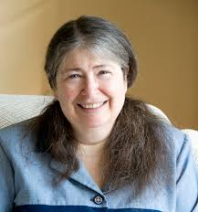
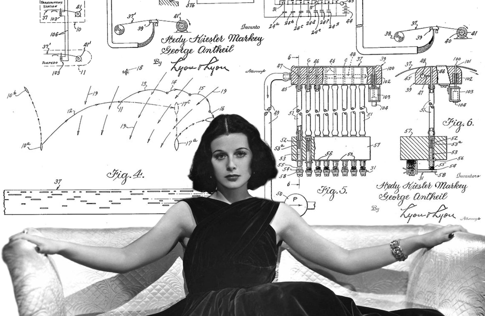
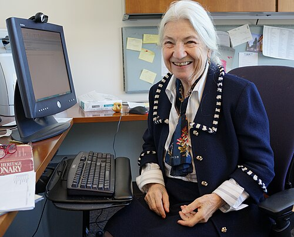
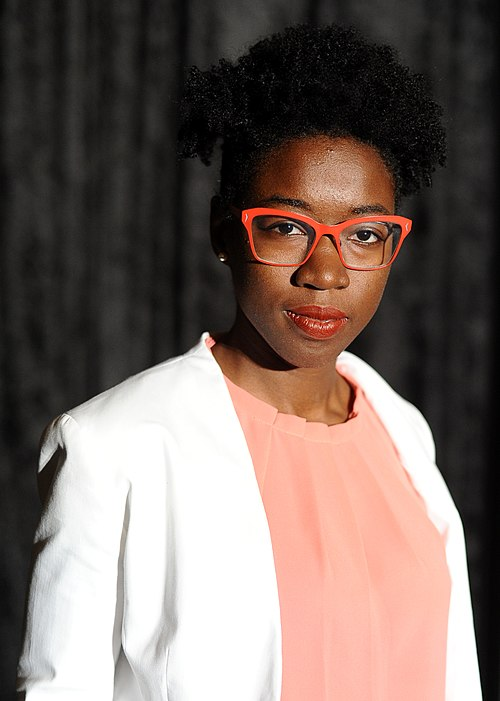

Women Pioneers in Computing
Ada Lovelace (1815-1852)

Often considered the world's first computer programmer, Ada Lovelace wrote the first algorithm intended for Charles Babbage's Analytical Engine. Her work foresaw the potential of computing beyond simple calculations.
Grace Hopper (1906–1992)
Rear Admiral Grace Hopper developed the first compiler for a programming language and was instrumental in popularizing the term “debugging” for fixing computer glitches. Her work laid the foundation for modern programming languages. She is the inventor of COBOL, an early high-level programming language still in use today.
Radia Perlman (1951–)

Known as the “Mother of the Internet,” Radia Perlman invented the spanning-tree protocol (STP), which made large-scale network routing possible and more reliable. She was elected to the National Academy of Engineering in 2019 for her contributions.
Hedy Lamarr (1914–2000)

Hedy Lamarr was not only a successful Hollywood actress but also the creator of Bluetooth. During World War II, she co-invented a frequency-hopping system for secure radio communications. This would become the foundation for modern wireless technologies like Wi-Fi and Bluetooth. Despite being self-taught and having no formal engineering education, Hedy Lamarr made major contributions and excelled in both her film and tech careers.
Margaret Hamilton (1936-)
Margaret Elaine Hamilton is the reason we have the name “software engineering” to describe what we do!
She also led development of the on-board flight software for NASA’s Apollo Guidance Computer for the
Apollo program and received the Presidential Medal of Freedom.
Born in 1936, Margaret Hamilton is an American computer scientist and systems engineer from Indiana
who worked on software development for Apollo 11, which is the first spacecraft to successfully put
humans on the moon in 1969. She is credited for popularizing the term “software engineering” and received
the NASA Exceptional Space Act Award for technical and scientific contributions in 2003.
Ruzena Bajcsy (1933-)

Ruzena Bajcsy is a professor of electrical engineering and computer sciences at UC Berkley. She previously worked at UPenn and was the founding director of the UPenn's General Robotics and Active Sensory Perception (GRASP) Laboratory where she worked on developing a digital anatomy atlas that made it possible to automatically identify anatomic structures of the brain. Her current research is in the use of robotic technology, namely measuring and extracting noninvasively kinematic and dynamic parameters of individual in order to assess their physical movement capabilities or limitations.
Joy Buolamwini (1990-)

Dr. Joy Buolamwini studies bias in algorithms and artificial intelligence. She founded the Algorithmic Justice League, an organization that advocates for ethical AI systems.